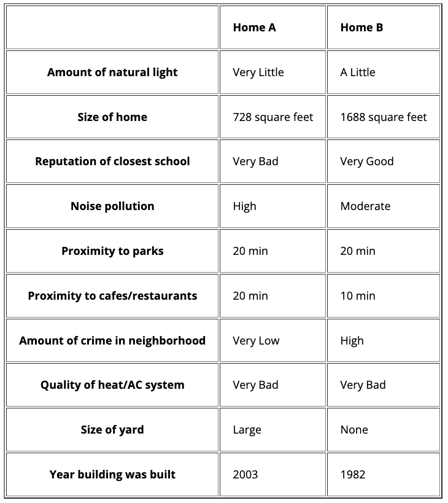

<!DOCTYPE HTML>
<html>
    <head>
        <title>Research Study</title>
        <script src="https://ajax.googleapis.com/ajax/libs/jquery/2.1.4/jquery.min.js"></script>
        <link rel="stylesheet" href="https://ajax.googleapis.com/ajax/libs/jqueryui/1.11.4/themes/smoothness/jquery-ui.css">
        <script src="https://ajax.googleapis.com/ajax/libs/jqueryui/1.11.4/jquery-ui.min.js"></script>
        <script src="https://cdnjs.cloudflare.com/ajax/libs/underscore.js/1.8.3/underscore-min.js"></script>
        <script src="jspsych/jspsych.js"></script>
        <script src="jspsych/plugins/jspsych-call-function.js"></script>
        <script src="jspsych/plugins/jspsych-html-keyboard-response.js"></script>
        <script src="jspsych/plugins/jspsych-html-button-response.js"></script>
        <script src="jspsych/plugins/jspsych-html-slider-response.js"></script>
        <script src='jspsych/plugins/jspsych-multiple-slider.js'></script>
        <script src='jspsych/plugins/jspsych-survey-likert.js'></script>
        <script src='jspsych/plugins/jspsych-instructions.js'></script>
        <script src='jspsych/plugins/jspsych-survey-text.js'></script>
        <script src='jspsych/plugins/jspsych-external-html.js'></script>
        <!-- <script src='jspsych/plugins/jspsych-maxdiff.js'></script> -->
        <script src='jspsych/plugins/jspsych-html-button-response.js'></script>
        <script src='jspsych/plugins/jspsych-html-button-response-machoice.js'></script>
        <script src= 'jspsych/plugins/machoice-html-keyboard-response.js'></script>
        <script src='database.js'></script>
        <script src='prac_database.js'></script>
        <!--<script src='jspsych/plugins/jspsych-image-button-response.js'></script>-->
        <link href="jspsych/css/jspsych.css" rel="stylesheet" type="text/css">
        <script src="utilities.js"></script>
        <style>
        td, th {padding: 20px;}
        .big {font-size: 40px;}
        .med {font-size: 24px;}
        </style>
    </head>
    <body>
    </body>
    
    <script>

        // ***Setting Up the Experiment***

        // Meta-var's
        var turk_code = "JSALK23";
        var study_version = "ma_choice_v3_pilot2";

        var study_time = 25;
        var study_money = 3.60;

        // var instr_reading_time = 2000; // in milliseconds
        // var instructions_time = 0;

        var counter = 0;

        // find the assignmentId & debugging status from the URL
        var urlParams = parseURLParams(window.location.href);
        var assignmentId = '';
        var debug = false;
        if (typeof urlParams != "undefined") {
            if (urlParams.hasOwnProperty('assignmentId')) {
                assignmentId = urlParams.assignmentId[0];
            }

            if (urlParams.hasOwnProperty('debug')) {
                debug = urlParams.debug[0];
            }
        }

        // needed only for attributes table    
        var yn =['No','Yes'];
        var size = ['None', 'Small', 'Medium', 'Large', 'Very Large']; // yard, garage
        var amount = ['Very Low', 'Low', 'Moderate', 'High', 'Very High']; // pollution, crime
        var amount2 = ['Very Little', 'A Little', 'A Moderate Amount', 'A Lot']; // light
        var prox1 = ['5 min', '10 min', '15 min', '20 min', '25 min']; // parks, cafes/restaurants
        var prox2 = ['10 min', '30 min', '50 min', '70 min', '90 min']; // waterfront/beaches
        var age = ['Old', 'Medium', 'New'];
        var goodness = ['Very Bad', 'Bad', 'Moderate', 'Good', 'Very Good']; // reputation-school, climate    
        var home_attributes = [
            {name: 'Number of Bedrooms', scale: null, lb: 1, ub: 5, postfix: ' bdrm'},
            {name: 'Size of Garage', scale: size},
            {name: 'Proximity to Parks', scale: prox1},
            {name: 'Proximity to Cafes/Restaurants', scale: prox1},
            {name: 'Proximity to Waterfront/Beaches', scale: prox2},
            {name: 'Noise Pollution', scale: amount},
            {name: 'Reputation of Closest School', scale: goodness},
            {name: 'Amount of Natural Light', scale: amount2},
            {name: 'Age of Building', scale: age},
            {name: 'Washer/Dryer', scale: yn},
            {name: 'Size of Yard', scale: size},
            {name: 'Fireplace', scale: yn},
            {name: 'Central AC', scale: yn},
            {name: 'Climate of Area', scale: goodness},
            {name: 'Hardwood Floors', scale: yn},
            {name: 'Freshly Painted Exterior', scale: yn},
            {name: 'Size of Home', scale: null, lb: 400, ub: 2000, postfix: ' square feet'},
        ];

        var num_practice_trials = 10;
        var trial_wait_time = 7000;

        if (debug) {
            num_practice_trials = 1;
            num_trials = 1;
            trial_wait_time = 1000;
        }

        // function to generate table
        function generateTable(cur_attributes,cur_opt1,cur_opt2) {
            let tbl_html = "<div align='center'><table border = 2px solid black><thead></tr><tr><th></th>\
                <td><b>Hotel A</b></td><td><b>Hotel B</b></td>";
            for (var i = 0; i < cur_attributes.length; i++) {
                tbl_html += "<tr><th>"+cur_attributes[i]+"</th><td>"+cur_opt1[i]+"</td><td>"+cur_opt2[i]+"</td>";
            }
            tbl_html += '</tr></table><br>';
            return tbl_html;   
        }
        
        // function to support AJAX query
        function getXMLHttp(){
        var xmlHttp
        try{
            xmlHttp = new XMLHttpRequest();
        }catch(e){
        try{
            xmlHttp = new ActiveXObject("Msxml2.XMLHTTP");
        }catch(e){
        try{
            xmlHttp = new ActiveXObject("Microsoft.XMLHTTP");
        }catch(e){
            alert("AJAX not supported.")
            return false;
        }
        }
        }
        return xmlHttp;
        }

        // funtion to get participant counter
        function getCounter(url, datDir) {
        let numCounter = 0;
        $.ajax({
            url: url,
            type: 'POST',
            async: false,
            data: { dir: datDir },
        }).done(function (data) {
            numCounter = data;
        });
        console.log(numCounter);
        return numCounter;
        }

        x = getCounter("counter.php");

        // if above thing doesn't work, will work on this approach
        // function storeid(str){
        //     console.log(str);
        //     var xhr = new XMLHttpRequest();
        //     xhr.open('GET', 'getData.php?q='+str, true);
        //     xhr.onload = function(){
        //         if(xhr.status == 200){
        //         console.log(xhr.responseText)
        //         var response = xhr.responseText;
        //         }
        //     }
        //     xhr.send();
        // }

        var start_instructions = 0;

        // ***Intro Blocks***

        var welcome = {
            type: "html-keyboard-response",
            stimulus: "<div class='center-content'>Welcome to the experiment. Press any key to begin."
        };

        var get_id = {
            type: 'survey-text',
            questions: [{prompt: "<b>Prolific ID:</b>", name: "worker_id"}],
            preamble: ["Please enter your <b>Prolific ID</b> below.<br>(When you're done, press <b>'Continue'</b>)<br><br>If you do not enter your ID accurately, we will not be able to pay you."],
        };

        var get_id_loop = {
        	timeline: [get_id],
        	loop_function: function(data) {
        		id = data.values()[0].response.worker_id;
        		if (id) {
        			jsPsych.data.addProperties({
        				subject: id,
        				version: study_version,
        				assignmentId: assignmentId
        			});
                    // storeid(id); // not needed for now
        			// save att data
        			for (var i = 0; i < home_attributes.length; i++) {
        				att = home_attributes[i];
                        att_data = {
                            subject: id,
                            version: study_version,
                            assignmentId: assignmentId,
                            attribute: att.name,
                            scale: att.scale == null ? '' : att.scale.toString(),
                            lb: att.lb == undefined ? '' : att.lb,
                            ub: att.ub == undefined ? '' : att.ub,
                            postfix: att.postfix == undefined ? '' : att.postfix,
                        }
                        save_data(att_data, 'attributes');
        			}

        			start_instructions = Date.now();

        			return false;
        		} else {
        			alert("Please provide your Prolific ID.");
        			return true;
        		}
        	}
        }


        // var check_consent = function(elem) {
        // 	if ($('#consent_checkbox').is(':checked')) {
        // 		return true;
        // 	}
        // 	else {
        // 		alert("If you wish to participate, you must check the box next to the statement 'I agree to participate in this study.'");
        // 		return false;
        // 	}
        // 	return false;
        // };

        // var consent_block = {
        // 	type:'external-html',
        // 	url: "consent.php?time=" + study_time + "&money=" + study_money + "&test=1",
        // 	cont_btn: "start",
        // 	check_fn: check_consent,
        // 	force_refresh: true
        // };

        // var attnCheck1 = {
        //     type: 'survey-text',
        //     questions: [{prompt: 'Your response', name: 'attention_check', required: debug ? false : true}],
        //     preamble: ["In order to complete this study, you will need to pay close attention for its entire duration. If you do not pay close attention, your data will be unusable.\
        // 		<b>Please do not take this study unless you have time and energy to pay attention for the full length of time.</b>\
        // 		<br><br>Please type this exact sentence into the box below: 'I will complete this study with my full attention.' and then continue."],
        //     on_finish: function(data) {
        //     	jsPsych.data.addProperties({attention_check: data.response.attention_check});
        //     }
        // };

        // ***Welcome and Task 1 Instructions***
        // var instructions_text = ['Welcome to the study! <br></br>\
        // 	Please <b>do not</b> press the <b>back</b> button or <b>refresh</b> your browser during the study; if you do, you will have to start over. <br><br> Please click <b>Next</b> and read the following instructions carefully. <br></br>',

        //  	'<br></br>In this study, you will make a series of choices. Each choice will be between <b>two homes that you might want to rent</b>.',

        // 	"Each home will have a list of features that describe it. For instance, here are two homes that you might be asked to choose between:<br><br>\
        // 	</img>\
        // 	<br><br><b>Your job will be to choose which home you'd rather rent.</b>",

        // 	"The descriptions of the homes on each trial will be incomplete.\
        // 	So for instance, on some trials, we might tell you about the age of the building and how close the home is to parks; \
        // 	but on other trials, we might instead tell you information about the number of bedrooms and the reputation of the closest school.<br><br>\
        // 	Your job is to use the information you have to make the best choice you can.",

        // 	"We'll ask you to spend some time thinking about each choice before making it. On each trial, after " + trial_wait_time / 1000 + " seconds, two buttons will appear like this:<br><br>\
        // 	</img><br><br>\
        // 	When you're ready, select the button that corresponds to your choice (i.e. either Home A or Home B). \
        // 	You don't have to make your choice as soon as the buttons appear; you can take as much time as you need on each trial.",

        // 	"Let's give you some practice trials to get the hang of it. There will be " + num_practice_trials + " practice trials.<br><br>\
        // 	When you're ready, please continue."
        // ];

        //  var instructions = {
        // 	type: "instructions",
        // 	pages: instructions_text,
        // 	show_clickable_nav: true
        // }

        // var instructions2 = {
        // 	type: 'instructions',
        // 	pages: ["Great job. Let's move on to the real trials.",
        // 		"One last thing before you start. While you're making your choices, <b>please pay attention to how you're making them</b> -- i.e. how much the different factors are influencing your choice.",
        // 		"There will be " + num_trials + " trials in total. Please do your best to pay attention throughout this whole section, and continue to make the best choice you can on each trial.<br><br>\
        // 		When you're ready to start, press 'Next'."],
        // 		show_clickable_nav: true
        // }

        var prac_trials = [];

        for (var i = 0; i <prac[x].length ; i++) {
            var cur_attributes = prac[x][i]["attributes"].split(',');
            var cur_opt1 = prac[x][i]["opt1_values"].split(',');
            var cur_opt2 = prac[x][i]["opt2_values"].split(',');
            var cur_choice = prac[x][i]["choice"];
            //console.log(cur_attributes,cur_opt1,cur_opt2,cur_choice);
            var tbl = generateTable(cur_attributes,cur_opt1,cur_opt2);
            prac_trials.push({
                type: 'machoice-html-keyboard-response',
                stimulus: tbl,
                choices: jsPsych.ALL_KEYS,
                prompt_one: '<small>(Trial ' + (i+1) + ' out of ' + prac[x].length + ')</small>',
                prompt_two: '<p id="prompt" style="visibility:hidden;"> Press any key to continue.<br>',
                button_duration: trial_wait_time,
                data: cur_choice,
                on_load: function() {
                // wait for 3 seconds, then show the prompt
                setTimeout(function() {
                    document.getElementById('prompt').style.visibility = "visible";
                    }, trial_wait_time);
                }
            });
        // console.log(trials);
        }
        
        var trials = [];

        for (var i = 0; i <db[x].length ; i++) {
            var cur_attributes = db[x][i]["attributes"].split(',');
            var cur_opt1 = db[x][i]["opt1_values"].split(',');
            var cur_opt2 = db[x][i]["opt2_values"].split(',');
            var cur_choice = db[x][i]["choice"];
            //console.log(cur_attributes,cur_opt1,cur_opt2,cur_choice);
            var tbl = generateTable(cur_attributes,cur_opt1,cur_opt2);
            trials.push({
                type: 'machoice-html-keyboard-response',
                stimulus: tbl,
                choices: jsPsych.ALL_KEYS,
                prompt_one: '<small>(Trial ' + (i+1) + ' out of ' + db[x].length + ')</small>',
                prompt_two: '<p id="prompt" style="visibility:hidden;"> Press any key to continue.<br>',
                button_duration: trial_wait_time,
                data: cur_choice,
                on_load: function() {
                // wait for 3 seconds, then show the prompt
                setTimeout(function() {
                    document.getElementById('prompt').style.visibility = "visible";
                    }, trial_wait_time);
                }
            });
        // console.log(trials);
        }

        var fixation = {
            type: 'html-keyboard-response',
            stimulus: '<span style="font-size:40px;">+</span>',
            choices: jsPsych.NO_KEYS,
            trial_duration: 1000
        }

        var timeline = []

        timeline.push(get_id_loop);
        for (var t = 0; t < prac_trials.length; t++) {
            timeline.push(fixation);
            timeline.push(prac_trials[t]);
        }
        for (var t = 0; t < trials.length; t++) {
            timeline.push(fixation);
            timeline.push(trials[t]);
        }
        jsPsych.init({
            timeline: timeline,
            show_progress_bar: true,
        });
    
</script>


